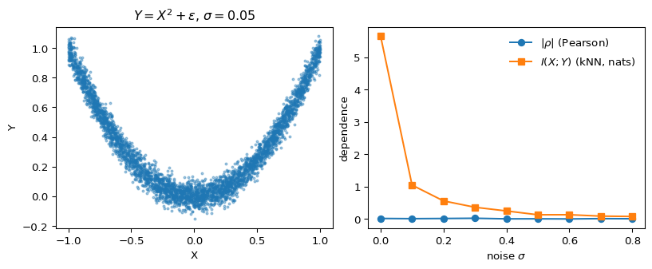

import numpy as np
import matplotlib.pyplot as plt
from scipy.stats import pearsonr
from sklearn.feature_selection import mutual_info_regression
rng = np.random.default_rng(7)
n = 4_000
def sample(sigma):
x = rng.uniform(-1, 1, size=n)
y = x**2 + rng.normal(0, sigma, size=n)
return x, y
sigmas = np.linspace(0.0, 0.8, 9)
rho, mi = [], []
for s in sigmas:
x, y = sample(s)
rho.append(pearsonr(x, y).statistic)
mi.append(
mutual_info_regression(x.reshape(-1, 1), y, random_state=0)[0]
)
rho = np.asarray(rho)
mi = np.asarray(mi)Mutual information sees what correlation can’t
information-theory
statistics
simulation
A short note on why mutual information is the right generalization of Pearson correlation — and a simulation that shows the gap.
Pearson correlation is so familiar it’s easy to forget it only sees linear dependence. Two variables can be deterministically related and have correlation exactly zero. Mutual information doesn’t have that blind spot, and looking at why is a clean way into information theory.
Definitions
For continuous random variables X and Y with joint density p(x, y) and marginals p(x), p(y), the mutual information is
I(X; Y) \;=\; \iint p(x, y) \, \log \frac{p(x, y)}{p(x)\, p(y)} \, dx\, dy. \tag{1}
Equivalently, I(X; Y) = H(X) + H(Y) - H(X, Y), where H is differential entropy. Two facts make this the natural quantity to reach for:
Properties of mutual information
- Non-negativity. I(X; Y) \geq 0, with equality iff X \perp Y.
- Invariance. I is invariant under any invertible transformation of X or Y separately. Pearson’s \rho is not.
Property (2) is the punchline. If you stretch, log-transform, or reorder the support of X — anything reversible — the dependence structure with Y doesn’t actually change, and I(X; Y) agrees. Pearson reports a different number every time.
The simulation
Let X \sim \mathcal{U}(-1, 1) and Y = X^2 + \varepsilon, with \varepsilon \sim \mathcal{N}(0, \sigma^2). The relationship is deterministic up to noise, but it’s symmetric around zero, so any linear summary of dependence cancels out. We’ll compute Pearson’s \rho and a kNN estimator (Kraskov et al., 2004) of I(X; Y) across noise levels.
fig, ax = plt.subplots(1, 2, figsize=(8.4, 3.4), constrained_layout=True)
x0, y0 = sample(0.05)
ax[0].scatter(x0, y0, s=4, alpha=0.4)
ax[0].set_title(r"$Y = X^2 + \varepsilon$, $\sigma = 0.05$")
ax[0].set_xlabel("X"); ax[0].set_ylabel("Y")
ax[1].plot(sigmas, np.abs(rho), marker="o", label=r"$|\rho|$ (Pearson)")
ax[1].plot(sigmas, mi, marker="s", label=r"$I(X;Y)$ (kNN, nats)")
ax[1].set_xlabel(r"noise $\sigma$"); ax[1].set_ylabel("dependence")
ax[1].legend(frameon=False)
plt.show()
Figure 1 is the whole story. The left panel shows the parabolic relationship — about as obviously dependent as two variables get. On the right, |\rho| hovers near zero across the entire noise range, while the kNN mutual-information estimator shows exactly the curve you’d hope for: large at low noise, decaying smoothly as \sigma grows.
Why this matters in practice
Two takeaways I keep coming back to:
- Feature screening with correlation can silently miss nonlinear predictors. If your screening step is “drop features with |\rho| < \tau,” you’ve thrown away the parabola. Mutual-information screening is the right default for nonlinear models.
- Independence testing is not the same as decorrelation. Useful reminder when you’re checking residuals or testing instrument exclusion: zero correlation does not buy independence, and I(X; Y) = 0 does.
A sharper treatment of why I is the unique measure satisfying a short list of natural axioms is in Cover & Thomas (2006) chapter 2; for the estimator used above, see Kraskov et al. (2004).
One liner
\rho measures linear alignment; I measures any statistical dependence at all.
References
Cover, T. M., & Thomas, J. A. (2006). Elements of information theory (2nd ed.). Wiley-Interscience.
Kraskov, A., Stögbauer, H., & Grassberger, P. (2004). Estimating mutual information. Physical Review E, 69(6), 066138. https://doi.org/10.1103/PhysRevE.69.066138